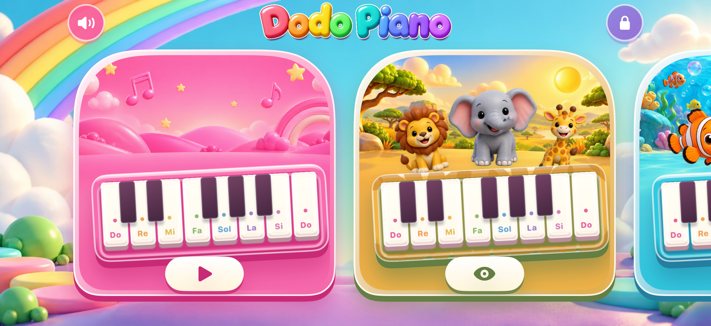

Dodo Piano · Aileler için
Dodo Piano
Minik parmaklar. Kocaman melodiler.
Zıplayan hayvanlar, deniz dostları ve rengârenk dünyalarla bir piyano oyun alanı. Tuşlara dokun, kendi müziğini yap.

- Ücretsiz Pembe Bahçe piyanosuyla başla.
- Eğlenceli karakterlerle 17 ek temayı keşfet.
- Bir yetişkin satın almadan önce temayı önizle.
- Açılan dünyalarda reklamsız, hesapsız ve çevrimdışı oyna.
iPhone ve iPad için. Ek temalar ayrı ayrı, tek seferlik uygulama içi satın alımlarla açılır. Satın alma ve geri yükleme ebeveyn alanındadır.